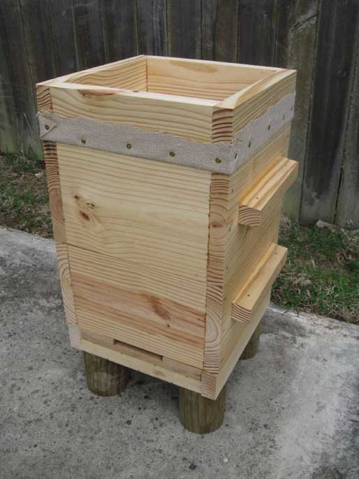
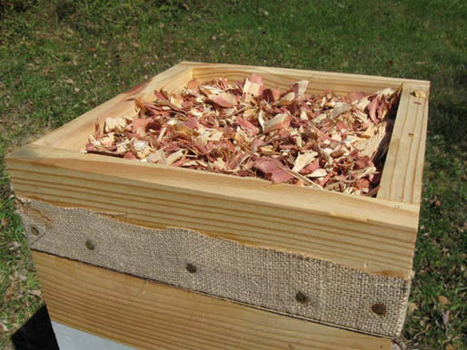
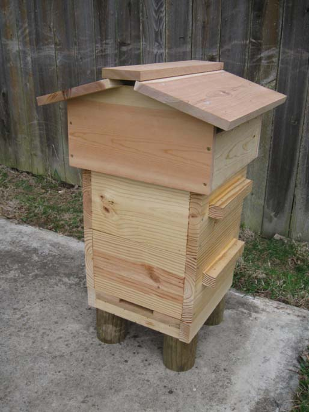

Warré Vertical Topbar Hive
Èmile Warré developed his popular hive based on his experience with various designs at the time and the natural behavior of the bee. He called his hive "la Ruche Populaire", which could be translated as "The People's Hive". To disseminate its work, he wrote a book L'Apiculture por Tous or Beekeeping for All with the twelfth and last edition in 1948.
His purpose was to create an economical hive closest to the natural conditions of the bee, while convenient for the beekeeper and allowing minimal intervention.
Most modern experience with the Warré hive resides in France and Belgium with some in Germany, Switzerland and Austria. Its popularity is increasing in the UK, USA, and Canada following the English translation of L'Apiculture por Tous or Beekeeping for All by Pat Cheney and David Heaf in 2007.

Features
Floor: Flat solid bottom (Johann Thür Floor Modification)
Entrance: Notched bottom entrance, 15 x 120 mm (Johann Thür Entrance Modification)
Hive-Body Box: W 30 x W 30 x H 21 cm internal dimensions, 30 mm thick exterior walls
Comb Support: Eight removable tob-bars; 24 mm wide, 9 mm thick, and 318 mm in length
Comb Spacing: 36 mm on-center spacing
Comb Height: 21 cm in each box
Cover: Coarse cloth on top-bars, wood edged quilt boxes containing natural insulating material retained with coarse cloth
Roof: Gabled roof with ventilated cavity
Management: Nadired, "Nestduftwärmebindung" retained within the brood nest
Wintering: Flexible size
Harvest: Raw, cut comb and strained





